쓰는 사람: 팀 화면
팀 화면에서 팀 지식을 보고 · 찾고 · 고치고 · 파일을 넣는 법이다. 팀 지식은 팀 서버에 있고, 관리자가 자리를 준 지식만 보인다.
팀과 내 PC 의 지식(md 문서 · 기록)을 한 곳에서 읽고 고친다. Claude Code 세션도 같은 지식을 MCP 로 읽고 쓴다. 프로그램은 둘이다.
- 팀 프로그램(팀 서버 · 팀 화면): 팀 지식만. 아이디 · 비밀번호로 들어온다. 이 설명서.
- 개인 프로그램(내 PC 의 kmd · 개인 화면): 내 개인 지식만. 개인 프로그램 설명서.
두 화면은 서로를 부르지 않는다. 둘을 잇는 길은 Claude Code 연결 둘(kmd-team · kmd)과 개인 화면의 공유(개인 → 팀)뿐이다.
1처음 들어오기
- 처음 들어오기 링크를 연다관리자가 메신저로 보낸 링크(24시간 · 한 번)를 브라우저로 연다. 아이디는 링크와 함께 받는다.
- 비밀번호를 정한다브라우저가 제안하는 것을 써도 된다. 한 번 들어오면 쓰는 동안 이어진다(12시간 쉬면 · 7일이 지나면 다시 들어간다).
- 모든 지식을 본다지식관리 › 모든 지식에 자리를 받은 팀 지식만 줄로 선다. 보여야 할 지식이 없으면 관리자에게 자리를 부탁한다.
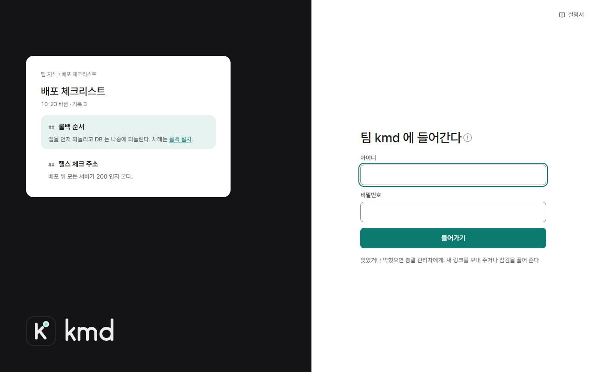
2화면 둘러보기
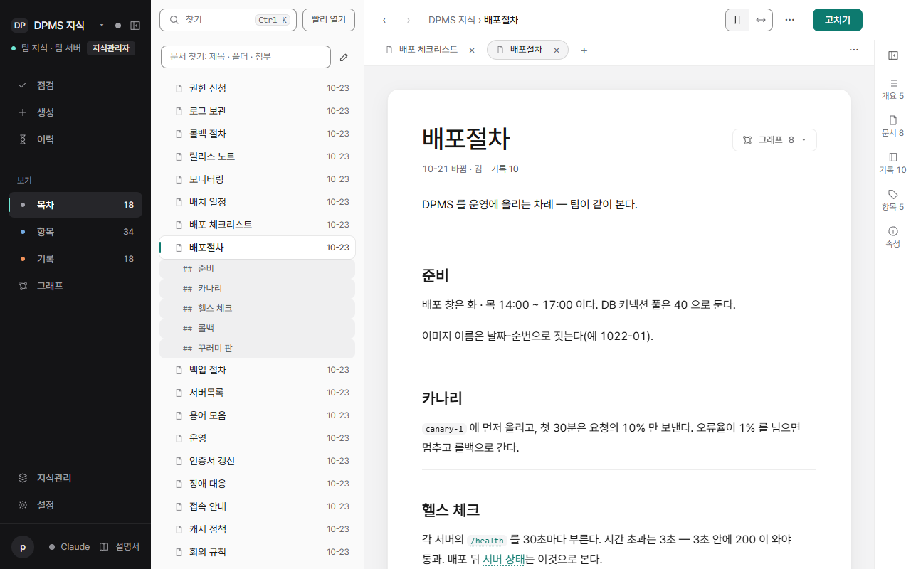
123456789- 지식 고르기: 잉크 기둥 맨 위 지식 이름 ▾. 지식을 바꾸거나 끝 줄 「모든 지식」 으로 지식관리 › 모든 지식에 간다. 바로 아래 자리 줄은 지금 내 자리(「팀 지식 · 팀 서버」 + 「지식관리자」 같은 자리 칩)다.
- 보기: 기둥의 「보기」 아래 목차 · 항목 · 기록 · 그래프. 이름 옆 흐린 수는 그 수.
- 목록 칸: 기둥 옆 칸에 고른 보기의 목록. 문서 줄 오른쪽은 바뀐 날(오늘이면 시각), 연 문서 아래에는 그 문서의
##항목 줄이 서고 누르면 그 자리로 간다. 기록 줄은 두 줄(이름 · 날짜 / 사람 · 첫 줄). 첨부는 문서 나무 끝 「첨부」 묶음. - 지식 메뉴: 지식 고르기 바로 아래 — 점검 · 생성 · 이력(배지 「값 바뀜 n」). 점검(탭 점검 · 지표 · 배지 없음)은 그 지식의 지식관리자(개인은 주인) · 생성은 고른 지식에 쓰기 자리가 있을 때만. 맨 아래 공통 메뉴는 지식관리 · 설정(에이전트 설치 · 서버 정보 …).
- 빨리 열기 · 찾기: 목록 칸 머리(목록 칸이 없는 화면은 머리 줄 맨 앞) · Ctrl O · Ctrl K.
- 문서 탭: 문서를 둘 이상 열면 탭 줄이 선다 · 나란히 보기 Ctrl \.
- 문서의 일: 머리 줄 오른쪽 「기본 폭 | 넓게」 · ⋯(다듬기 · 지켜보기 · 옛 판 · 파일 경로 복사) · [고치기](쓰기 자리부터). 860 이하는 화면 아래 동작 띠(갈래 · 제목 · ⋯ · 고치기)로 내려간다.
- 오른쪽 칸: 처음은 좁은 기둥(그림 아래 이름 · 수). 누르면 펴지고 개요 · 문서 · 기록 · 항목 · 속성 다섯 묶음이 선다(지금 보는 것에 「지금」). 가운데 종이에는 문서 내용만 둔다. 종이 끝 「이 문서」 는 가리키는 문서 · 가리키는 쪽 문서 · 기록 · 항목 네 칸이다.
- 나 · Claude · 설명서: 잉크 기둥 바닥. 동그라미(나)를 누르면 맨 위에 들어온 때 · 판 · 시각, 그 아래 설정 · 단축키 · 내 기기 · 화면 밝기 · 나가기. 설명서는 새 탭으로 열린다.
잉크 기둥 · 목록 칸: 기둥은 위에서부터 지식 고르기 → 자리 줄 → 지식 메뉴 → 보기 「목차 · 항목 · 기록 · 그래프」 → 공통 메뉴(지식관리 · 설정) → 바닥(나 · Claude · 설명서). 지식관리 · 설정 화면(1025 이상)에서는 「보기」 자리에 그 하위 메뉴가 선다. 목록 칸은 찾기 · 빨리 열기 → 찾기 칸 → 목록이고, 첫 화면 · 문서 · 기록 · 항목에서만 보인다(점검 · 이력 · 지식관리 · 설정 · 그래프는 접힌다). 문서는 지식 폴더(docs/)의 폴더 짜임 그대로 나무로 보인다. 폴더 줄 · 항목 종류 줄을 누르면 접고 편다(처음은 모두 접힘 · 지금 연 것의 묶음은 펼침 · 찾기 칸 옆 아이콘이 「모두 펴기」). 기록 탭의 찾기 칸 옆 아이콘은 「내가 쓴 것만」, 항목의 「최근 바뀜 · 내가 쓴 것」 은 거르기 단추라 누르면 파랗게 켜진다. 1024 이하는 기둥이 좁아져 그림 아래 이름만 남고, 601 ~ 860 은 목록 칸이 기둥에 마우스나 초점을 두면 그 옆에 겹쳐 뜬다. 600 이하는 머리 줄 ☰ 로 기둥과 목록 칸을 한 서랍으로 연다. 접으면(Ctrl [) 같은 차례의 아이콘 레일만 남는다. 그래프는 캔버스 왼쪽 위 조작판(찾기 · 보는 방법 · 보기 「선 · 제목 · 회전」 · 종류 · 바탕 · 600 이하는 아래 시트 「펴기 · 접기」)에서 고르고, 오른쪽 위 판에 점 · 선 수와 범례가 선다.
잉크 기둥(Ctrl [) · 오른쪽 칸(Ctrl ])은 접으면 아이콘 기둥만 남는다. 칸 너비는 끌어서 바꾸지 않는다. 머리 줄 「기본 폭 | 넓게」 로 넓은 표를 한눈에 본다. 그래프는 본문 오른쪽 위 「그래프 ▾」 를 누르면 이웃이 뜨고, 점을 누르면 그것이 열린다. 이 모두는 이 브라우저에만 남는다.
기둥의 자리 줄은 지금 내 자리(「팀 지식 · 팀 서버」 + 자리 칩)를 늘 보인다(1024 이하는 머리 줄의 자리 칩). 저절로 하는 일이 멈추면 자리 줄 아래 「⚠ 경고 n」 단추가 선다(600 이하는 머리 줄의 경고 점). 누르면 무엇이 멈췄고 어떻게 푸는지가 보이고, 줄마다 [알았다] 로 나에게서 걷는다. 들어간 것이 끝났으면 같은 자리에 [다시 들어가기] 가 선다(뒤에서 읽던 것은 창을 띄우지 않고 이 단추로만 알린다). 화면 위아래에 따로 띠 · 상태 줄은 없다.
지식 홈
지식을 고르고 문서를 열지 않았을 때의 첫 화면이다. 맨 위 짙은 판(무대)에 자리 줄 · 지식 이름 · README 첫 문단([모두 읽기] 로 전체) · 목차 · 항목 · 기록 수(누르면 그 보기) · 속성(쓰는 사람 · 자동수집)이 서고, 그 아래 단축키 실마리 둘(나란히 보기 · 빨리 열기) · 최근 바뀐 문서(날짜 · 이름 · 첫 줄) · 최근에 지운 항목(쓰기 자리부터 [되살리기]: 지운 때의 글로 다시 세우고 이력에 남는다)이 선다. 첫 화면에는 오른쪽 칸이 없다. 점검은 지식 메뉴 「점검」 에서 본다(지식관리자).
모든 지식
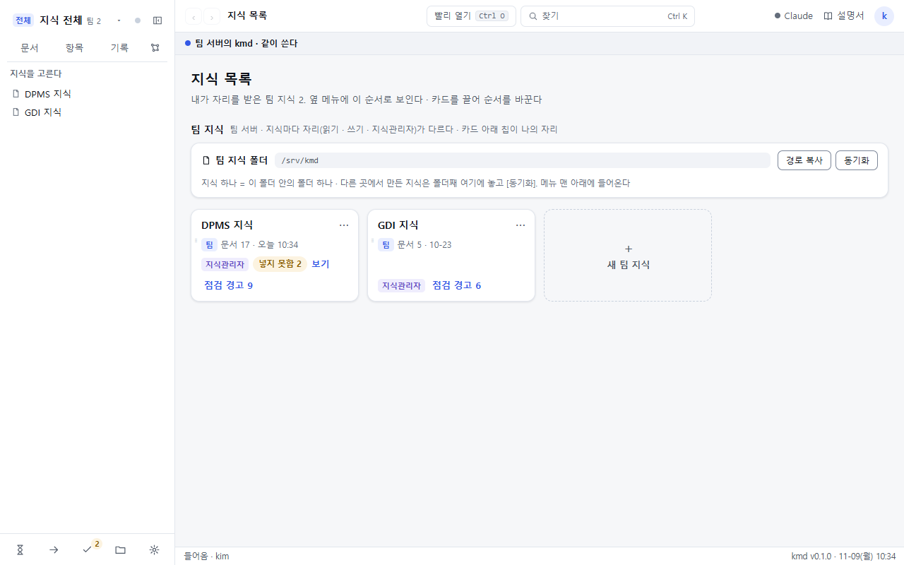
3보는 법 셋
문서 하나 = md 파일 하나. 항목(## 머리)으로 나뉜다. 글 속 문서 · 항목 링크에 마우스를 올리면 미리보기.
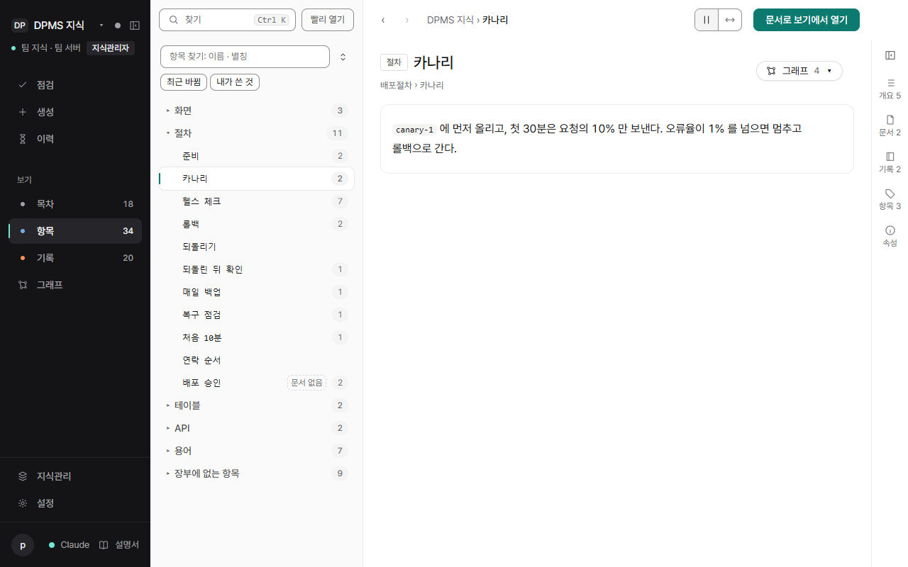
항목테이블 · 화면 · API · 절차 · 용어처럼 따로 부를 만한 것 하나하나. 종류별로 거르고, 「이 항목을 쓰는 곳」 이 같이 보인다.
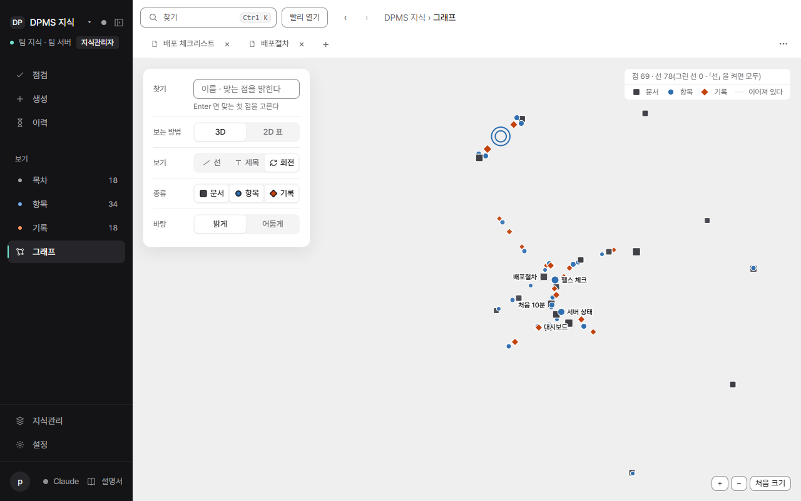
그래프문서 · 항목 · 기록이 어떻게 이어졌나. 3D 와 2D 표(문서 상자 안에 항목) 두 방식. 3D 에서 큰 점 · 이름이 보이는 점이 많이 이어진 중심(허브)이고, 허브마다 제 이웃을 둘레에 모은다. 바탕은 밝게 · 어둡게. 점을 누르면 이웃 한 겹만 남고, 이웃을 누르면 더 뻗는다(「뻗기 거두기」 · 「처음 점으로」 · 뻗은 점이 칸 밖이면 [다 보이게]). 카드의 [기록 n 펴기] 로 그 점의 기록을 펼친다. × 로 닫으면 전체.
4찾기
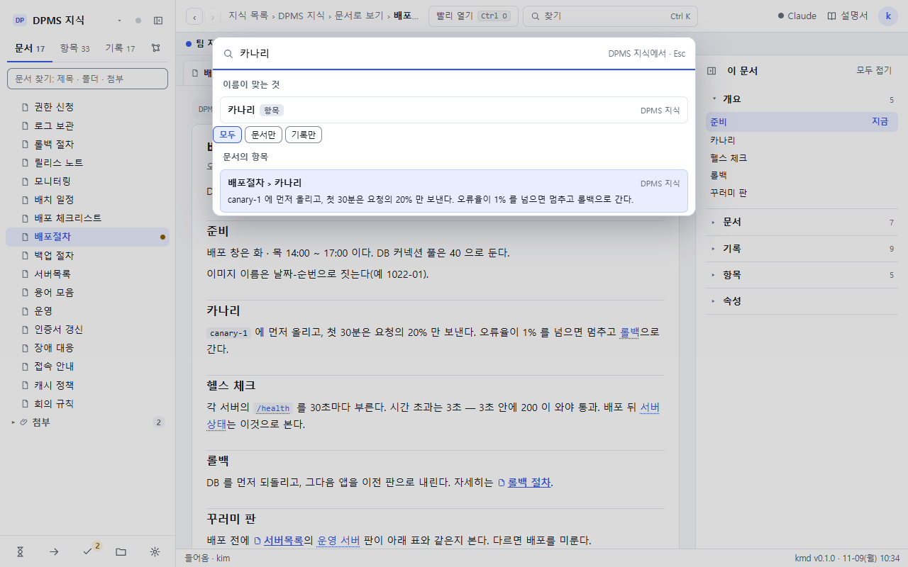
- 위 거르기 모두 · 문서만 · 기록만으로 좁힌다.
- 기록 줄에는 상태 칩(바로잡힘 · 되돌림)이 붙는다. 저장 승인 전 기록은 칩 없이 「기록」 이다. 바로잡히거나 되돌린 기록은 맨 뒤로 간다.
- 여러 지식에서 찾으면 지식마다의 순위를 섞어 한 줄로 세운다(한 지식이 위를 다 차지하지 않는다).
| 단축키 | 하는 것 |
|---|---|
| Ctrl K | 찾기: 이름 · 별칭 · 문서 속 글 |
| Ctrl O | 빨리 열기: 문서 · 항목 이름으로 바로 |
| Ctrl P | 명령 창: 생성 · 이력 · 설정 · 모든 지식으로 가기 |
| Ctrl \ | 나란히 보기 |
| Ctrl S · Esc | 고치는 창에서 저장 · 그만두기 |
찾은 것이 없을 때: 맞는 항목을 안다면 [「…」 을 항목의 별칭으로 더하기] 로 그 말을 항목에 단다. 다음부터 그 말로 찾힌다(영문 · 줄임말 · 바꿔 말한 말). 승인 저장 지식은 이것도 저장 확인 창(5절)을 거쳐 들어간다.
5고치기와 자리
팀 지식은 지식마다 받은 자리대로 한다. 받지 않은 지식은 목록 · 찾기 · 이력 · Claude Code 어디에도 보이지 않는다.
| 자리 | 할 수 있는 것 | 고친 것은 |
|---|---|---|
| 읽기 | 문서 · 기록 · 이력 · 그래프 보기 · 찾기 · Claude Code 로 읽기 | 고치기 단추가 흐리다(「쓰기 자리가 없다」) |
| 쓰기 | 문서 고치기 · 새 문서 · 새 항목(저장 제안으로) · 자기 기록 고치기 · 파일 · 폴더 넣기 · 가져올 곳 부탁 · 자기 기록 되돌리기 | 저장 확인 창에서 [넣기] 하면 들어가고 이력에 「고침」 으로 남는다. 항목 지우기 · 이름 바꾸기 · 저절로 채우는 표는 지식관리자가 한다 |
| 지식관리자 | 위 모두 + 항목 지우기 · 이름 바꾸기 · 남의 기록 고치기 · 점검 · 지표 · 구조 · 문서 다듬기 · 가져올 곳 · 지식 설정 · 권한 주기 | 같다(저장 확인 창) |
| 총괄 관리자 | 모든 지식의 지식관리자 + 사람 · 팀 지식 세우기 · 저장 승인 · 백업 · Claude 연결 | 같다 |
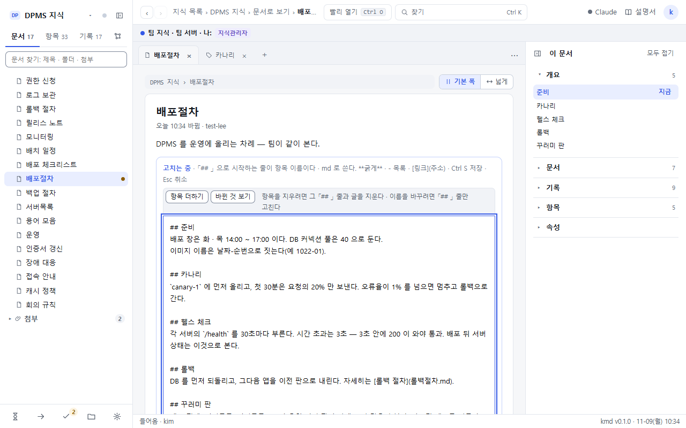
저장 확인: 저장 제안을 보고 넣기
지식은 늘 승인 저장이라 고친 글을 바로 쓰지 않는다. [저장] 을 누르면 kmd 가 무엇이 어떻게 들어갈지 저장 제안을 짓고(아직 아무것도 쓰지 않는다) 「저장 확인」 창에 보인다.
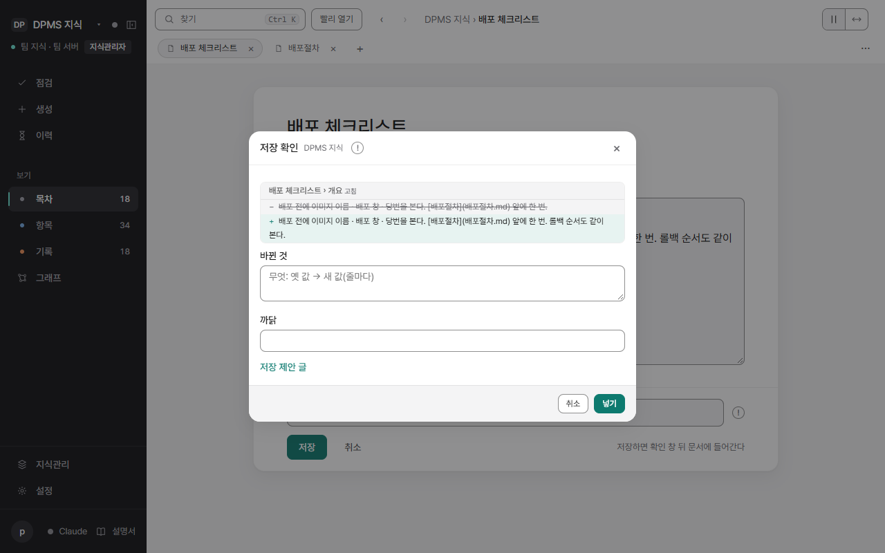
- 창에 보이는 것: 항목마다 바뀐 줄(고침 · 새 항목 · 글 그대로) · 지움 · 이름 바뀜 · 새로 생긴 것(새 문서 · 항목(장부)) · 칸 「바뀐 것」(차이에서 채운다 · 고칠 수 있다) · 「까닭」 · 경고 · 오류 · [저장 제안 글](kmd 가 지은 글 그대로).
- 경고(노란 칸)는 창 안에 보인다. [넣기] 가 승인이고, 경고를 받아들이고 그대로 넣는다는 뜻이다. 받아들인 경고는 기록 끝 「받아들인 경고」 에 남는다. 고치려면 [취소] 하고 글을 고친다.
- 오류(빨간 칸)가 있으면 [넣기] 가 막힌다. 글을 고쳐 다시 저장한다.
- 창의 칸을 고치면 주 단추가 [다시 보기]로 바뀐다(제안을 다시 받는다).
- 그사이 누가 지식을 바꿔 제안이 달라지면 새 제안과 「그사이 바뀌었다」 줄이 선다. 다시 보고 [넣기]. 읽은 뒤 누가 같은 항목을 고쳤으면 창을 닫고 편집기에 「그사이 바뀐 글」 이 보인다.
- 쓰던 글은 찾기를 열고 닫거나 다른 화면에 갔다 와도 그대로다. 저장하지 않고 닫았으면 다음 [고치기] 때 되살린다(이 탭 안에서).
- 들어온 것이 끝났으면(12시간 쉼 · 7일) 저장할 때 그 자리에서 비밀번호를 묻고 이어서 저장한다.
- 고치는 사이 누가 같은 항목을 고쳤으면 저장하지 않고 「읽은 뒤 누가 고쳤다」 를 보인다. 새 글을 다시 읽어 두었고 쓰던 글은 그대로다. 고친 곳을 확인하고 다시 저장한다.
- 여러 항목을 함께 고쳤는데 하나라도 검사에 걸리면 아무것도 저장하지 않는다. 걸린 까닭과 함께 고친 항목 수, 걸린 항목마다 [그 항목으로] 가 보인다.
- 엑셀 · 표 글(탭으로 나뉜 줄)을 붙여 넣으면 md 표로 바뀐다. 그림은 붙여 넣을 수 없다(첨부는 생성의 「원본 파일도 첨부로 둔다」).
- 표 줄의 칸 수가 머리 줄과 다르면 저장은 하고 알린다.
- Claude 는 부르지 않는다. 값이 맞는지는 고친 사람이 본다. 이력의 「고침」 줄을 펼치면 항목마다 옛 값 → 새 값이 보이고 [되돌리기] 로 그 항목만 되돌린다.
기록 고치기(정정 기록)
기록을 열고 머리 오른쪽 [고치기]. 내가 쓴 기록은 쓰기 자리부터, 남의 기록은 지식관리자가 고친다. 창에 옛 값 · 새 값 · 고친 내용을 적고 저장한다.
- 원래 기록은 그대로 두고 「정정: 원래 기록」 기록을 새로 남긴다. 원래 기록 화면의 「정정」 칸에 「이 기록을 바로잡음」 으로 이어진다.
- 그 기록이 들어간 항목에 옛 값이 한 곳에만 있으면 그 자리에서 새 값으로 바꿔 넣는다(Claude 없음 · 「정정 기록을 남겼다 · 문서 n곳에 넣었다」).
- 옛 값이 여러 곳에 있거나 문장이 바뀌어 찾지 못하면 팀 일꾼에게 넘긴다(「팀 일꾼에게 넘겼다」). 넣으면 이력에 남는다.
- 그 기록이 들어간 항목이 없으면 정정 기록이 그 기록이 건드린 항목(없으면 「기록 모음」 의 그 달 항목)에 이어진다.
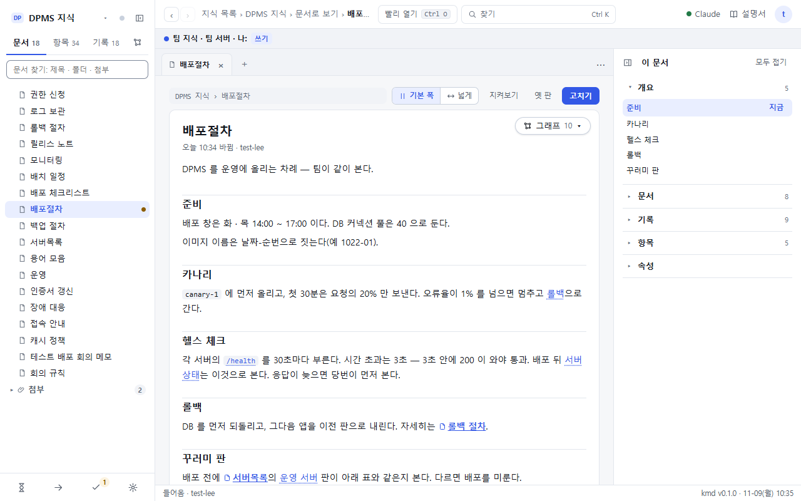
본문에는 확정된 지식만 쓴다. 회의 경위 · 초안 · 「언제 누가 바꿨나」 는 기록과 이력에 남고, 출처 줄은 kmd 가 문서 끝 「참고」 에 단다. 링크는 문서(x.md) · 항목(x.md#머리) · 바깥(https://…) 셋만.
6생성: 파일 · 폴더 넣기
잉크 기둥 지식 메뉴의 생성(고른 지식에 쓰기 자리가 있을 때). 탭 둘: 수기수집(끌어다 놓기 판 · [파일] [폴더] [글]) · 자동수집(가져올 곳 · 더하기는 지식관리자). 아래 진행에 도는 일 · 끝난 일. 넣는 곳은 잉크 기둥에서 고른 지식이다. 빈 지식이면 판 위에 「빈 지식이다 · 폴더째라면 [기초 세우기]」(지식관리자)가 선다.
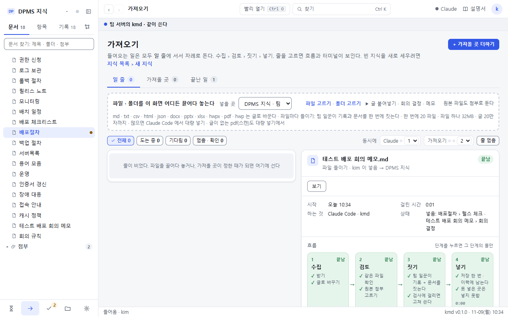
- 넣는 곳: 끌어다 놓기 · 파일 고르기 · 폴더 고르기 · 넣을 지식.
- 거르기 · 손잡이: 전체 · 도는 중 · 기다림 · 멈춤 · 확인. 동시에 도는 수 · 줄 멈춤.
- 자세히: 고른 일의 상태 · [보기](만든 기록 · 문서).
- 흐름: 네 단계와 단계 안 걸음. 단계를 누르면 터미널에 그 단계 줄만.
- md · txt · csv · html · json · docx · pptx · xlsx · hwpx · hwp · pdf 는 kmd 가 글로 바꾼다(목차 · 쪽 번호 · 되풀이 머리글은 뺀다).
- 파일마다 줄 하나가 서고, 팀 일꾼이 그 파일 하나로 기록과 문서 글을 한 번에 짓는다. 저장도 한 번이라 이력에 한 줄로 남는다. 승인 저장 지식은 늘 들어간다: 문서 꼴에 걸리면 두 번까지 고쳐 쓰고, 그래도면 규칙 길(Claude 없이 원문 그대로 · 회의록 같은 갈래 문서의 새 항목이나 「들인 자료」 폴더)로 넣는다. 끝난 일 줄에 들어간 곳과 「규칙 길」 칩(까닭은 마우스를 올리면)이 보인다.
- 한 번에 20 파일까지(파일 하나 32MB). 21개부터는 보내지 않고 「많으면 Claude Code 에서 대량 넣기」 를 안내한다.
- 「원본 파일도 첨부로 둔다」 를 고르면 원본이 문서 첨부로 같이 들어간다(기본 꺼짐). 그림 파일은 이것을 골라야 들어간다.
- 글이 없는 pdf(스캔)는 「못 넣음」 으로 남는다. Claude Code 의 대량 넣기가 원본을 읽는다.
- 손잡이: 팀 일꾼에게 넘긴 파일은 [빼기] · [그만두기] 만 있다. 아직 짓지 않았으면 기록 없이 닫고, 짓는 중이면 초안을 넣지 않고 닫는다.
- 끝난 일은 30일 남는다(터미널 줄까지). 파일 · 제목으로 찾는다.
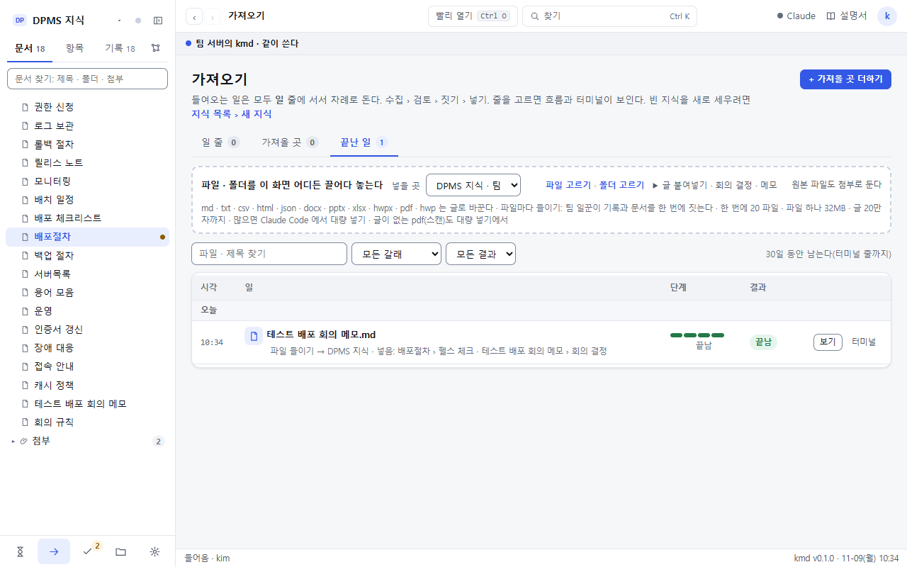
자동수집(지켜보며 맞추기)
문서 폴더 · 소스 코드(git) · DB 를 정한 때마다 다시 본다. 더하기 · 고치기는 그 지식의 지식관리자가 한다. 쓰기 자리는 [관리자에게 부탁] 을 누른다. 자세한 것은 지식관리자 설명서.
7이력
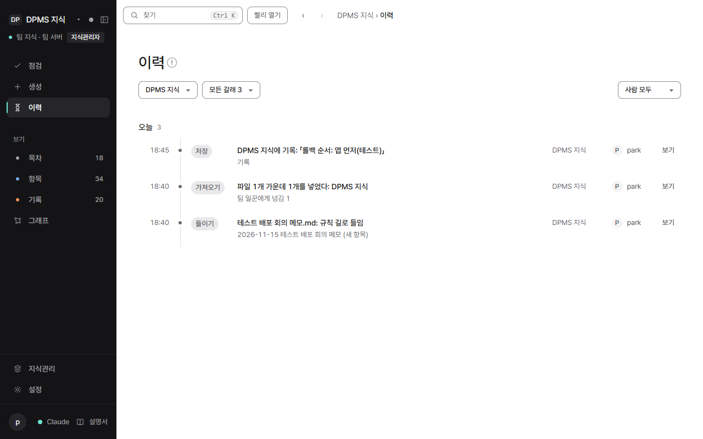
- 내 값이 바뀐 줄은 맨 위 값 바뀜(노랑). 저장 줄을 펼치면 넣은 항목마다 「옛 값 → 새 값」 이 보이고, 내 저장(지식관리자는 모든 저장)은 그 항목만 [되돌리기] 한다. 그 뒤 누가 다시 고친 항목은 되돌리지 않는다.
- 갈래 · 지식으로 거르고, 줄을 누르면 펼쳐 그 일 · 문서를 연다.
- 지켜보기: 머리 줄 ⋯ 메뉴의 「지켜보기」 를 켜 두면 남이 그 문서를 바꿀 때 알린다(이 브라우저 · 탭이 숨었으면 브라우저 알림도).
- 경고 [알았다]: 잉크 기둥 「⚠ 경고 n」 단추(600 이하는 머리 줄 경고 점)의 줄마다 [알았다] 로 나에게서 걷는다. 양이나 까닭이 바뀌면 다시 선다.
- 화면 밝기: 잉크 기둥 바닥 동그라미(나) › 화면 밝기에서 시스템 따라 · 밝게 · 어둡게.
- 옛 판: 머리 줄 ⋯ 메뉴의 「옛 판」 은 그 문서를 바꾼 판을 차례로 보인다. 판을 고르면 그때의 글, [지금과 견주기] 는 항목마다 빠진 줄 · 더한 줄. 읽기만이고, 되돌리려면 이 이력의 [되돌리기].
- 「새 기기가 이어졌다」 줄이 내가 한 것이 아니면 잉크 기둥 바닥 동그라미(나) › 내 기기에서 끊는다.
8Claude Code 에 팀 지식 붙이기
설정 › 에이전트 설치(누구나). 작업 폴더의 Claude Code 가 팀 지식을 읽고 남기게 한다.
| 자리 | 설정 메뉴(처음은 서버 정보) |
|---|---|
| 총괄 관리자 | 서버 정보 · 에이전트 설치 · 개인 프로그램 설치 · 팀 일꾼 · 운영 |
| 지식관리자 · 쓰기 · 읽기 | 서버 정보 · 에이전트 설치 · 개인 프로그램 설치 |
날마다 쓰는 점검 · 생성은 잉크 기둥 지식 고르기 바로 아래 지식 메뉴에 있다(점검은 지식관리자 · 생성은 쓰기 자리부터 보인다). 지식을 고르면 어느 화면이든 그 아래에 보기 탭 · 찾기 칸 · 문서 나무가 늘 보인다(「문서」 버튼은 없다). 구조는 문서 나무 머리의 연필 아이콘이다(지식관리자). 맨 아래 공통 메뉴는 지식관리 · 설정.
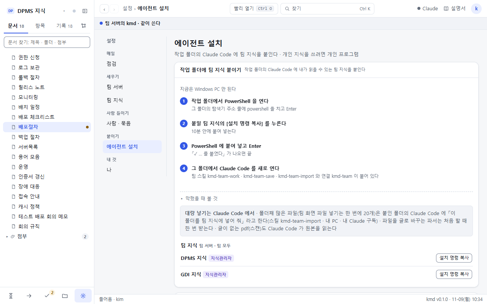
- 붙일 팀 지식의 [설치 명령 복사]내가 읽기 자리 이상인 팀 지식만 고를 수 있다.
- 작업 폴더의 PowerShell 에 붙여 넣고 Enter그 폴더에 팀 스킬 셋(
kmd-team-work·kmd-team-save·kmd-team-import) · 연결kmd-team(.mcp.json) · CLAUDE.md 안내만 쓴다. 다른 연결 · 사람이 쓴 줄은 그대로다. 끝에 Claude Code 가 이 PC 에 있나 · 로그인했나를 한 줄로 알린다(없으면 깔고, 로그인하지 않았으면 터미널에서claude auth login). 팀 지식만 쓰면 개인 프로그램은 깔지 않아도 된다. - 그 폴더에서 Claude Code 를 새로 연다세션이 일 전에 팀 지식에서 사실을 찾아 읽고(kmd-team-work), 일이 끝나면 배운 것을 남긴다(kmd-team-save · 아래 「세션에서 남기기」).
세션에서 남기기: 저장 제안 · 대화 조절 · 승인
「팀 지식에 남겨」 라고 하거나 일 끝에 팀이 알아야 할 새로 정한 것이 있으면 세션이 남긴다. 늘 저장 제안을 보이고 승인받은 뒤에만 넣는다.
- 어디에「어느 팀 지식에 남길까요?」 를 묻는다(붙은 지식이 하나면 「여기에 남길까요?」).
- 정리 거리 고르기작업이 길면 정한 것 · 바뀐 것을 묶음마다 한 줄로 보이고 남길 묶음을 고르게 한다. 정해지지 않은 묶음은 「정해지지 않음 · 넣지 않음」 이다(이슈 대장 같은 갈래가 있으면 「이슈로 제기」 를 고를 수 있다). 메모로 남기는 길은 없다.
- 【저장 제안】kmd 가 지은 제안 글(기록 · 고칠 항목 · 새 항목(문서) · 새 항목(장부) · 이을 항목 · 뺀 것 · 경고)을 고치지 않고 그대로 보인다. 경고가 있으면 끝 줄에 「승인하시면 경고 w1 을 받아들이고 그대로 남깁니다」.
- 대화 조절고칠 것을 말로 한다: 「BZD020 은 빼고」 · 「이 값은 30 이 아니라 60」 · 「기록 범위를 오늘 오후 작업만」 · 「넣을 곳을 배포절차로」. 세션이 다시 제안받아 바뀐 줄만 보인다(경고 줄과 끝 줄은 늘 · 「전체」 라고 하면 전체). 몇 번이든 된다.
- 승인「좋아, 넣어」 하면 마지막으로 보인 제안 그대로 들어간다. 그사이 지식이 바뀌었으면 아무것도 쓰지 않고 바뀐 줄을 보이며 다시 묻는다.
- 끝 보고들어간 곳 · 세운 것 · 받아들인 경고 수와 남긴 묶음을 세 줄로 알린다.
대량 넣기(폴더째)
팀 화면 파일 넣기는 한 번에 20개까지다. 폴더째 많은 파일은 붙인 폴더의 Claude Code 에 「이 폴더를 팀 지식에 넣어 줘」 라고 한다(스킬 kmd-team-import · 내 PC · 내 Claude 구독).
- 어느 팀 지식에 넣을지 묻는다쓰기 자리 이상인 팀 지식에만 넣는다.
- 처음 한 번 파서를 받는다파일을 글로 바꾸는 kmd 파서(몇십 MB)를 팀 서버에서 받아도 되는지 묻는다. 받은 것은
%USERPROFILE%\.kmd\parse에 두고, 판이 같으면 다시 받지 않는다. 팀 화면 · 개인 프로그램과 같은 바꾸기다. - 규칙 표 하나로 한 번 승인받는다파일마다 저장 제안을 받아 「파일 → 넣을 곳 · 갈래 · 경고」 표 하나로 보인다. 빼거나 넣을 곳을 바꿀 파일은 말로 고치고, 한 번 승인하면 표의 경고까지 받아들인 것이다. 글이 없는 pdf(스캔)는 Claude Code 가 원본을 직접 읽는다.
- 파일마다 기록과 항목 글을 한 번에 넣는다승인 뒤에는 묻지 않고 이어서 넣는다. 앞 파일이 같은 항목을 고쳐 제안이 달라진 파일은 끝에 모아 그 줄만 다시 승인받는다.
- 끝에 「넣음 n · 이미 넣음 n · 건너뜀 n」중간에 멈췄으면 같은 폴더로 다시 시킨다. 넣은 파일은 「이미 넣음」 으로 건너뛴다. 원본 파일은 늘 첨부로 같이 들어간다(한 파일 8MB 까지 · 더 크면 글만).
팀 스킬 글이 새 판으로 바뀌면(지금 팀 스킬 판 9) 이 화면의 한 줄을 그 폴더에서 다시 붙여 넣고 Claude Code 를 새로 연다. 옛 판 스킬로 남긴 저장도 막지 않는다(판은 측정에만 남는다).
연결은 이 PC 의 기기 열쇠(Windows 자격 저장소 · %USERPROFILE%\.kmd\keys)로 팀 서버에 「누구인지」 알린다. 내 자리대로만 읽고 쓴다. 잃어버린 PC 는 설정 › 서버 정보 › 내 기기에서 끊는다.
그 폴더에서 팀 지식을 떼려면: .claude/skills/kmd-team-* 폴더 셋을 지우고, .mcp.json 의 kmd-team 줄을 지우고, CLAUDE.md 의 kmd 팀 덩이를 지운다. 이 PC 의 열쇠까지 끊으려면 팀 화면 › 잉크 기둥 바닥 동그라미(나) › 내 기기에서 끊는다. Windows 가 아닌 PC(Mac · Linux)는 지금 붙이는 한 줄이 되지 않는다.
9개인 프로그램 설치
설정 › 개인 프로그램 설치(고를 수 있음). 팀 지식만 쓰면 개인 프로그램은 필요 없다(8절 한 줄이면 된다). 개인 지식을 쓰려면 이 PC 에 개인 프로그램을 깔고(또는 새 판으로 올리고) 팀에 잇는 한 줄이 여기 있다. 이은 기기는 설정 › 서버 정보 › 내 기기에 보인다.
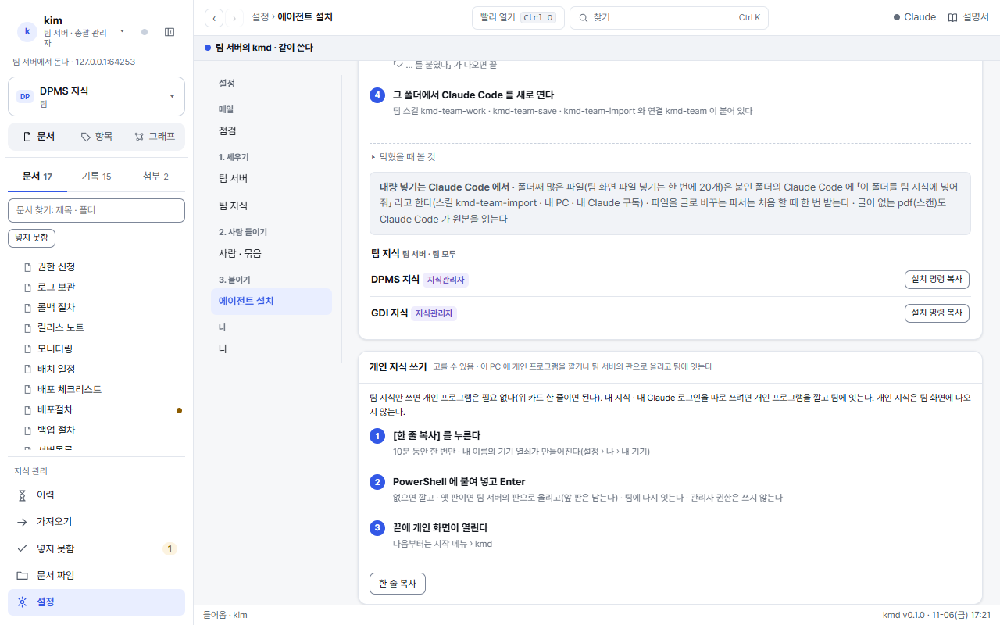
9-1말 풀이
| 말 | 뜻 |
|---|---|
| 문서 | 지식의 md 파일 하나. 확정된 지식만 담는다. |
| 항목 | 문서 안 ## 머리 하나와 그 글. 고치기 · 이력 · 되돌리기는 항목마다 한다. |
| 항목 · 항목 장부 | 항목은 문서의 ## 머리 한 덩이이고, 장부에는 종류:값(예: 이슈:DPMS-ISS-15)과 라벨 · 별칭으로 적힌다. 그 목록이 항목 장부다. 별칭(영문 · 줄임말)을 달면 그 말로도 찾힌다. 장부에 오르지 않은 머리는 항목 보기에서 「장부에 없는 항목」 으로 묶인다. |
| 기록 | 무엇을 왜 바꿨는지 남긴 글. 항목 글과 같은 저장 한 번으로 들어간다. |
| 저장 제안 | 저장하기 전에 kmd 가 지은 「무엇이 어디에 어떻게 들어갈지」 글(아직 쓰지 않음). 화면은 저장 확인 창, 세션은 【저장 제안】. |
| 받아들인 경고 | 저장 제안의 경고(빠진 값 · 바뀐 문장 …)를 보고도 [넣기] · 「넣어」 로 승인한 것. 기록 끝에 남는다. |
| 글 그대로 | 바뀐 글 없이 항목에 이어진 기록(왜 그렇게 했나만 있는 기록). 이력에 작은 글로 보인다. |
| 규칙 길 | Claude 가 문서 꼴을 맞추지 못한 파일 넣기 · 가져올 곳을 Claude 없이 원문 그대로 넣는 길. |
| 기록 모음 | 이을 항목이 없는 기록이 그 달 항목에 이어지는 문서. |
| 저장 승인 전 기록 | 저장 승인 전에 남은 기록. 칩 없이 「기록」 으로만 보인다(읽기만). |
| 바로잡힘 | 뒤에 남긴 정정 기록이 고친 옛 기록. |
| 값 바뀜 | 내가 넣은 값을 그 뒤에 남(또는 들이기)이 바꾼 줄. 이력 맨 위에 노랗게 선다. |
| 자리 | 지식마다 받은 권한: 읽기 · 쓰기 · 지식관리자(그 위에 서버 전체의 총괄 관리자). |
| 들이기 | 파일 · 가져올 곳처럼 쓴 사람이 없는 것을 팀 일꾼(Claude)이 기록 + 항목 글로 지어 넣는 일. |
10나가기 · 밖으로 나가는 것
- 나가기: 잉크 기둥 바닥 동그라미(나) › 나가기 또는 설정 › 서버 정보 › 나가기(이 브라우저) · 모두 나가기(다른 기기 · 브라우저도. 기기 열쇠(Claude Code 연결 · 개인 프로그램의 팀 잇기)까지 끊을지 고른다). 고치던 글이 있으면 먼저 묻는다.
- 비밀번호 바꾸기: 설정 › 서버 정보 › 비밀번호 바꾸기(지금 비밀번호 · 새 비밀번호 10자 이상). 이 브라우저는 그대로 쓰고 다른 곳은 다시 들어간다. 기기 열쇠는 그대로다.
- 팀 지식이 밖으로 나가는 길은 저장소(지식마다 정한 git 자리)과 Claude 들이기 · 다듬기(팀 서버의 팀 일꾼 로그인)뿐이다. 「Claude 에 보내지 않음」 지식은 Claude 에 보내지 않는다.